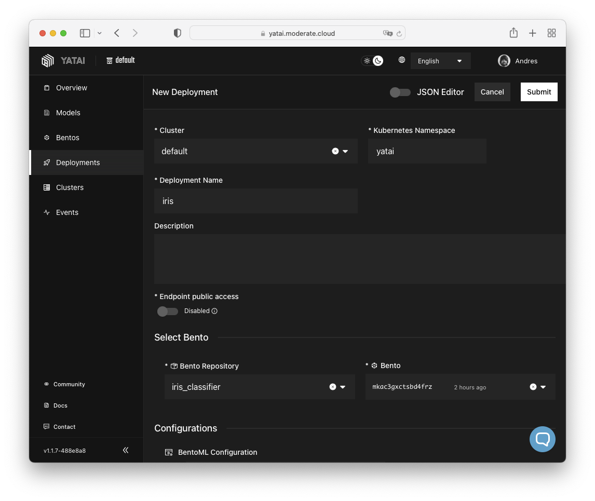

Deploying ML Models
The MODERATE platform leverages Yatai to offer a scalable service for storing and exposing machine learning models created with BentoML. This allows developers to utilize the MODERATE platform as a model repository, as well as a service that can automatically deploy HTTP APIs for said models.
This guide provides a concise example of how to upload and deploy a machine learning model on the platform from start to finish.
About BentoML
Please check the BentoML quickstart tutorial for an introduction to the main concepts behind BentoML.
The first step is to clone the BentoML Git repository:
- We clone a specific version for reproducibility. In any case, this guide should work for later versions.
Create a virtualenv and install the Python package requirements of the quickstart example:
$ cd BentoML/examples/quickstart
$ virtualenv --python python3 .venv
$ source .venv/bin/activate
$ pip install -r requirements.txt
Train the model and save it to the BentoML local model store:
Ignore the virtualenv
Make sure to add .venv to the .bentoignore to avoid packing the entire virtualenv into the Bento.
The build command creates the Bento: a self-contained package that contains all assets that are necessary to deploy the model:
$ bentoml build
Building BentoML service "iris_classifier:mkac3gxctsbd4frz" from build context "[...]/BentoML/examples/quickstart".
Packing model "iris_clf:5ehbqtxctcr7gfrz"
Locking PyPI package versions.
██████╗░███████╗███╗░░██╗████████╗░█████╗░███╗░░░███╗██╗░░░░░
██╔══██╗██╔════╝████╗░██║╚══██╔══╝██╔══██╗████╗░████║██║░░░░░
██████╦╝█████╗░░██╔██╗██║░░░██║░░░██║░░██║██╔████╔██║██║░░░░░
██╔══██╗██╔══╝░░██║╚████║░░░██║░░░██║░░██║██║╚██╔╝██║██║░░░░░
██████╦╝███████╗██║░╚███║░░░██║░░░╚█████╔╝██║░╚═╝░██║███████╗
╚═════╝░╚══════╝╚═╝░░╚══╝░░░╚═╝░░░░╚════╝░╚═╝░░░░░╚═╝╚══════╝
Successfully built Bento(tag="iris_classifier:mkac3gxctsbd4frz").
Possible next steps:
* Containerize your Bento with `bentoml containerize`:
$ bentoml containerize iris_classifier:mkac3gxctsbd4frz
* Push to BentoCloud with `bentoml push`:
$ bentoml push iris_classifier:mkac3gxctsbd4frz
The list command provides a list of the local Bentos:
$ bentoml list
Tag Size Creation Time Path
iris_classifier:mkac3gxctsbd4frz 25.34 KiB 2023-04-24 14:34:46 ~/bentoml/bentos/iris_classifier/mkac3gxctsbd4frz
After the Bento is added to the system, it can be deployed to MODERATE's Yatai instance. To do this, first, you will need to log in using the API token provided by the platform administrator:
$ bentoml yatai login --api-token <token> --endpoint https://yatai.moderate.cloud
Overriding existing Yatai context config: default
Successfully logged in as user "User" in organization "default".
Yatai serves as a storage platform for Bentos and Models, much like how an image registry functions for container images. To upload a Bento to the Yatai instance, simply use the push command to transfer it from the system:
$ bentoml push iris_classifier:mkac3gxctsbd4frz
╭─────────────────────────────────────────────────────────────────────────────────────────────────────────────────────────────────────────────────────────────────────────────────────────────────────────────────╮
│ Successfully pushed model "iris_clf:5ehbqtxctcr7gfrz" │
│ Successfully pushed bento "iris_classifier:mkac3gxctsbd4frz" │
╰─────────────────────────────────────────────────────────────────────────────────────────────────────────────────────────────────────────────────────────────────────────────────────────────────────────────────╯
Pushing Bento "iris_classifier:mkac3gxctsbd4frz" ━━━━━━━━━━━━━━━━━━━━━━━━━━━━━━━━━━━━━━━━━━━━━━━━━━━━━━━━━━━━━━━━━━━━━━━━━━━━━━━━━━━━━━━━━━━━━━━━━━━━━━━━━━━━━━━━━━━━━━━━━━━━━━━━ 100.0% • 7.2/7.2 kB • ? • 0:00:00
Uploading model "iris_clf:5ehbqtxctcr7gfrz" ━━━━━━━━━━━━━━━━━━━━━━━━━━━━━━━━━━━━━━━━━━━━━━━━━━━━━━━━━━━━━━━━━━━━━━━━━━━━━━━━━━━━━━━━━━━━━━━━━━━━━━━━━━━━━━━━━━━━━━━━━━━━━━━━ 100.0% • 2.1/2.1 kB • ? • 0:00:00
Once you have successfully uploaded a Bento to Yatai, it will be displayed in the Bentos section of the dashboard:

Number of replicas
In the following example both min_replicas and max_replicas are set to 1 for development purposes. In a production environment it would be better for max_replicas to be 2 or 3 to provide some availability guarantees.
Resource requests
Please reduce the resource requests of the Service and Runner replicas if possible. These values can be defined in targets.*.config.resources.requests and targets.*.config.runners.*.resources.requests respectively.
Endpoint public access
Note that if you activate Endpoint public access in the Deployment form, the HTTP API will be exposed to the Internet without authentication. This is the equivalent of setting enable_ingress to true in the JSON document.
To make the ML model's HTTP API accessible, the final step is to create a deployment via the Yatai dashboard. This action generates the necessary Kubernetes resources.
Creating a deployment is straightforward using the visual form in the Yatai dashboard. It's generally easier than manually creating the BentoDeployment Kubernetes resources:

{
"cluster_name": "default",
"name": "iris",
"description": "",
"targets": [
{
"type": "stable",
"bento_repository": "iris_classifier",
"bento": "mkac3gxctsbd4frz",
"config": {
"hpa_conf": {
"min_replicas": 1,
"max_replicas": 1
},
"resources": {
"requests": {
"cpu": "50m",
"memory": "500Mi",
"gpu": ""
},
"limits": {
"cpu": "1000m",
"memory": "1024Mi",
"gpu": ""
}
},
"envs": [],
"runners": {
"iris_clf": {
"resources": {
"requests": {
"cpu": "50m",
"memory": "500Mi",
"gpu": ""
},
"limits": {
"cpu": "1000m",
"memory": "1024Mi",
"gpu": ""
}
},
"hpa_conf": {
"min_replicas": 1,
"max_replicas": 1
},
"deployment_strategy": "RollingUpdate"
}
},
"enable_ingress": false,
"deployment_strategy": "RollingUpdate"
}
}
],
"kube_namespace": "yatai"
}